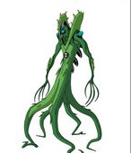

Heatblast is a plasma-based life-form whose body is composed of a super hot inner plasma body covered by dark reddish brown volcanic rocks.[pop-up 1][4] As a fire-based entity, his body radiates high amounts of heat. His feet have a slight oval-like design with only two toes and one back toe. His tongue is also made of fire[5] while his collarbone resembles a volcano which generates a fiery "hair" that covers his head, leaving his mask-like face visible with no nose or ears.
(2) Wildmutt
Wildmutt appears to be a large orange dog-like creature with no eyes, ears, nose, or tail. He stands on all fours and his movements are somewhat apelike. His teeth are very defined and his bottom jaw sticks out of his mouth.
(3) Diamondhead
Diamondhead can shoot crystals from his hands. He can create crystal weapons. Can reshape his projectiles into certain shapes. Diamondhead can grow crystal on other objects and himself.
(4) Four Arms
Four Arms' strength allows him to use anything heavy as a weapon, from big rocks he can throw several feet away, to beams and pillars that can be used as clubs. His great strength even extends to his jaws and bite, allowing him to bite metal and damage it.
(5) Way Big
Way Big is a white colossal humanoid creature with a large fin on his head, which is black at the front and red at the bottom. He has blade-like growths on his shoulders and spikes on his waist. He also has red arms with two black lines and white fins on the elbows, wristband-like outgrowths on his wrists and yellow eyes on his head with two extra eyes protruding on his cheeks, one on each.[TP 1] He has red feet with two toes, a black sandal-like covering on the middle of his feet and three black lines on the side of his neck. The red parts of Way Big's body are made of an unknown cosmic material with metallic properties.[DJW 1] Ben 10,000's Way Big is identical to this design.
(6) Stinkfly
Stinkfly has a bug/insect body and four insect-like flat legs with two arms, whose hands are human-style ones with three clawed fingers. He has four small eyes on long stalks connected to his large head, which can all be moved around independently from each other. His wings are light green and very fragile with lines on them, and his limbs are a brown-greenish color. His tail is an ultra sensitive receptor, making it like an antenna
(7) Upgrade
Upgrade has a black exterior with green stripes that resemble circuitry all over him. The green circle on his head is his eye, which glows whenever he talks. His body is made up of billions of small cell-like creatures called nanites
(8) XLR8
XLR8 resembles a semi-armored Velociraptor. He has black orbs on his feet, a black tail with five blue stripes, and bulky claws on his 3 fingers that can only open and close. He wears a black cone-like helmet with a protective visor that slides over his face (that is part of his Kineceleran biology and not mechanical).[pop-up 1][4] When the visor is lifted, one can see his blue face, green eyes, black lips, and stripes running under and in between his eyes; the rest of his head's features are unknown. XLR8 has five blue stripes on his tail and wears a black bodysuit and turtleneck-like shirt with a white stripe on the center.
(9) Ripjaws
Ripjaws has his original series appearance, but with longer fins and claws, resembling those of the Piscciss Volann Prisoner's. He also has clothing covering his chest and forearms. His eyes are green and are shaped differently. He wears a container with water around his neck, and grey armor on his lower torso. The Infinimatrix symbol is on his chest and is recolored black and green. His colors match the color palette of Heroes United.
(10) Wildvine
 Wildvine is a humanoid plant with one eye in the middle of his face, five vine-like legs, four long fingers on his hands, flytrap-shaped flaps with teeth covering his head, and pods on his back that he can use as explosives or smoke bombs.